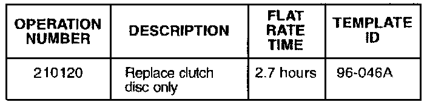

M/T - 5-Speed Is Hard To Shift
October 22, 1996BULLETIN NO.
96-046
YEAR
1994 - 96
MODEL
INTEGRA
VIN APPLICATION
See AFFECTED VEHICLES
5-Speed Is Hard to Shift
SYMPTOM
The transmission is hard to shift, or the clutch will not disengage.
PROBABLE CAUSE
The retainers holding the torsion springs in the clutch disc have weakened, allowing the springs to rub against the flywheel or, in some cases, come completely out.
VEHICLES AFFECTED
1994: All
1995: All
1996:
4-door
RS, LS - Thru VIN JH4DB7...TS006487
GS-R - Thru VIN JH4DB8...TS001263
3-door
RS, LS - Thru VIN JH4DC4...TS014446
GS-R - Thru VIN JH4DC2...TS003157
CORRECTIVE ACTION
Replace the clutch disc with the new assembly listed under PARTS INFORMATION.
1. Remove the transmission and clutch assembly.
2. Inspect the clutch disc (service manual section 12).
^ If the disc is worn, but shows no other signs of damage, investigate other causes for hard shifting. Replace parts as necessary.
^ If any of the torsion springs are missing, or show signs of rubbing against the flywheel (wear, abrasion), or the torsion spring retainers are bent, continue to step 3.
3. Inspect the flywheel and pressure plate for grooving caused by contact with the torsion springs. Replace any parts that are damaged. Do not resurface a damaged flywheel.
NOTE:
Do not replace a flywheel or pressure plate that is only discolored but not damaged.
4. Reinstall the clutch assembly and transmission.
PARTS INFORMATION
Clutch disc: P/N 22200-P72-005
WARRANTY CLAIM INFORMATION
In warranty:
The normal warranty applies.

Failed P/N: 22200-P54-000
Defect code: 031
Contention code: C99
Out of warranty:
Any repair performed after warranty expiration may be eligible for goodwill consideration by the District Technical Manager or your Zone Office. You must request consideration, and get a decision, before starting work.